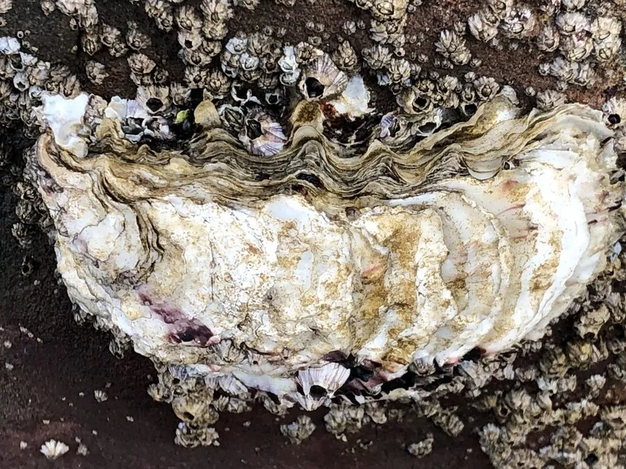

软体动物 · 动物界
太平洋牡蛎 Magallana gigas

世界上养殖最广的牡蛎之一，壳形不规则、两壳不等，靠滤食浮游生物生长，是重要的海水养殖经济贝类。
- 分类
- 门软体动物门纲双壳纲目牡蛎目科牡蛎科属巨牡蛎属
- 栖息环境
- 河口和近岸的硬质基底、潮间带与浅海养殖区，耐盐度变化
- 地理分布
- 原产西北太平洋（日本、朝鲜半岛、中国北部沿海），全球多地引种养殖
- 保护级别
- 暂无评估；中国未列入国家重点保护野生动物名录（重要养殖贝类）
物种志
太平洋牡蛎的贝壳长而厚，左右两壳不等大：左壳深凹，用来固着在基底上；右壳较平坦，像一枚盖子盖在上面。壳表有层层生长纹，颜色从灰白、黄褐到紫黑不等，壳长通常 10–20 cm，最大可超过 30 cm。软体部分藏在壳内，鳃大而发达，是滤食的主要器官。
太平洋牡蛎原产日本、朝鲜半岛和中国北部沿海，如今已被引入欧洲、北美、澳大利亚和南美等地，是世界上养殖最广的贝类之一。它固着生活：幼体在海水中浮游数周后，寻找硬质基底附着，之后终生不再移动。它靠鳃过滤水中的浮游生物和有机颗粒，一只成体每天可以过滤数十升海水，因此牡蛎礁具有净化水质的作用。太平洋牡蛎能改变性别，一生中可能多次在雌雄之间转换；繁殖力极强，一次可产数千万至数亿粒卵，养殖 1–2 年即可上市。但它被引入新海域后常与本地牡蛎竞争，在部分地区成为入侵物种。目前它没有IUCN 的正式评估，中国未将其列入国家重点保护野生动物名录。
形态与习性
- 食性滤食浮游生物和有机颗粒，靠鳃过滤海水
- 壳长通常 10–20 cm，最大可超过 30 cm
- 寿命通常 5–10 年
- 繁殖繁殖力极强，一次可产数千万至数亿粒卵
- 生长养殖 1–2 年即可达到上市规格
- 固着幼体浮游数周后固着在硬质基底上，终生不再移动
趣味知识
- 太平洋牡蛎能改变性别，同一只个体一生中可能多次在雌雄之间转换。
- 它每天能过滤数十升海水，牡蛎礁因此具有净化水质的作用。
- 太平洋牡蛎被引入欧洲和北美后大量繁殖，与本地牡蛎争夺栖息地。